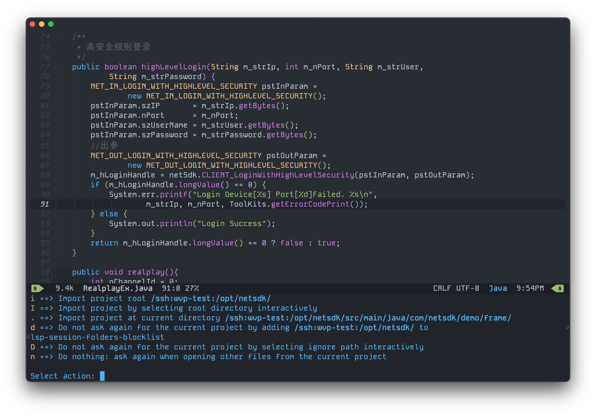

Emacs Tramp
这是使用 emacs 替代 shell 客户端的绝佳方案。在Emacs中，“tramp” 是一个系统级的文件访问工具，用于通过网络或各种连接方式导入和导出 Emacs 项目。
简介
这是使用 emacs 替代 shell 客户端的绝佳方案。在Emacs中，“tramp” 是一个系统级的文件访问工具，用于通过网络或各种连接方式导入和导出 Emacs 项目，你可以利用 ssh 协议编辑服务器上的文件，就像在本地编辑一样，同时也可以使用 dired 进行文件拷贝，甚至使用 lsp-tramp 直接在本地对服务器的项目文件进行编码并提供代码补全功能。
基本配置
emacs tramp 是 emacs 默认自带的功能，但是仍然有一点基础配置需要设置。首先需要安装 ssh 客户端，其次配置 ssh server 的密钥登录，这样每次使用 tramp 的时候就无需输入账号密码登录了。更简单的可以使用 ssh config 来配置 ssh 连接信息。在 `~/.ssh/config` 文件中配置。
HOST wvp-sn
ControlMaster auto
ControlPath ~/.ssh/ssh-%r@%h:%p
ControlPersist 10m
ServerAliveInterval 60
hostname x.x.x.x
Port 22
User root
ForwardAgent yes
ForwardX11 yes
IdentityFile ~/.ssh/id_rsa
然后在 emacs 中简单配置 tramp，设置正确的文件编码，可以自动纠正 linux 文件显示乱码的问题。
(after! tramp
(setq explicit-shell-file-name "/bin/bash"))
(setq tramp-default-method "ssh")
(prefer-coding-system 'utf-8-unix)
(setq-default buffer-file-coding-system 'utf-8-unix)
使用 tramp，通过 `C-x C-f` 打开文件查找输入 `/ssh:user@hostname:/path` 来打开远程文件。就可以像在编辑本地文件一样编辑远程服务器上的文件了，可以体验本地 emacs 配置的大部分功能。包括代码高量、bookmark 等等。
文件传输
使用 dired 进行本地和服务器之间文件的互相拷贝，这真的非常方便。在 dired mode 中使用 `C` 来 copy 文件至另外的路径。当按下快捷键 `C` 以后，弹出目录，这时选择的目录可以穿越本地和服务器之间进行文件传输，甚至将远程服务器 A 上的文件通过 tramp 拷贝至远程服务器 B 也都是可行的。不过 tramp 的性能不算好，比普通的 ssh 要稍微慢一些，因此如果拷贝的文件比较大建议还是使用 scp 进行文件拷贝以免 tramp 出现超时。 也可以在 dired 利用标记功能一次性传输多个文件。
如果 ssh 不可用，tramp 会阻塞emacs
lsp-tramp
lsp-tramp 是 lsp-mode 提供的利用 tramp 来给远程代码文件提供语言服务的功能特性。原理是通过 emacs 来远程驱动服务器上启动 lsp-server 进行代码补全，这意味着你需要在远程服务器上安装对应的 lsp-server 及启动特定 lsp-server 所需要的一切依赖。
以 neoemacs 中使用 lsp-java 为例，首先需要安装 java17，其次需要将 jdtls 安装至 lsp-java-server-install-dir 目录，最后还需要将 lombok 和 lsp-java-format-settings-url 文件拷贝至对应的目录。需要注意的是由于是通过本地 emacs 来驱动远程服务器开启 lsp-server，因此上述文件全部需要和本地的目录一致，包括 home 目录。
比如，本地的 home 目录为 /Users/van 则在远程服务器（wvp-test）上同样需要创建该目录，目前测试下来不能识别不同系统的家目录。在 neoemacs 中使用 maven 并没有携带指定的路径，仅需要在 shell 环境中有可执行的 `mvn` 命令即可，这需要在 .bashrc 文件中配置 PATH。
综上，那么在 neoemacs 中使用 lsp-tramp 需要的将如下目录放置：
- ssh:wvp-test:/Users/van/lsp-java
- ssh:wvp-test:/Users/van.doom.d/neoemacs/eclipse-codestyle.xml
- ssh:wvp-test:/Users/van.doom.d/neoemacs/lombok.jar
- ssh:wvp-test:/Users/van/soft/jdk/zulu17.40.19-ca-fx-jdk17.0.6-macosx_aarch64
- ssh:wvp-test:~.m2/settings.xml
- ssh:wvp-test:~.bashrc 中配置 export PATH=“/ssh:wvp-test:/opt/apache-maven-3.9.7/bin:$PATH”
刚刚也提到了 tramp 由于本身是通过 ssh 协议来传输信息的，加上性能又比 ssh 要差一点，因此在使用 lsp-tramp 的时候卡顿感还是比较明显，不过还算能接受。对于比较大的项目建议不要导入项目根目录。在 lsp 初次启动的时候导入当前目录，按需导入可有效提升 lsp-tramp 的体验。
